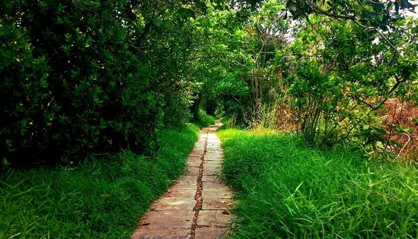

1.Nadukani
1.Nadukani
Nadukani is one of the popular hill stations near Kottayam and is a major picnic spot. Nadukani offers wonderful views of the landscapes covered in dense forests, Nilgiri mountains, Muvattupuzha river, mystical valleys, and colorful flora. One of the popular tourist places near Kottayam, Nadukani has emerged as the new go-to spot for youngsters and couples looking for refuge. Take buses or private taxis to reach Nadukani from Kottayam. At the end, the trip would be truly worth it.
LOCATION:Kottayam, Kerala 686001
TIMIMGS:open 24 hours

2.Island of pathiramanal
Located in the popular Vembanad Lake, this quaint island is one of the most fascinating islands in Kerala. The journey to reach the striking island is one of the most mesmerizing ones complete with sights of rare birds, swaying coconut palms, and whispering waters.
And let’s just not talk about the stimulating allure of the island. Its unspoilt beauty and hidden paths take you through a mystical world that you really crave to see while on a break from the tiring work-home routine. The lush farmlands get converted to thick forests, and thick forests to paddy fields. The varied vegetation on the island is awesome. You could also choose from some of the best resorts near Kottayam if you want a luxurious staycation.
LOCATION: Muhamma, Kerala 688555
TIMIMGS:9 AM to 8 PM
 3.Kottathavalam
3.Kottathavalam
Located about 70 km from Kottayam, Kottathavalam is a popular hill station and a favorite among those looking for a long drive through the mountaineous roads. The terrain has rock cut trails, passing through which you may feel a sense of exhilaration and thrill. Many small and huge temples adorn the pathways.
In fact just a little detour takes you to a 1,000 year old temple. Kottathavalam is a perfect mixture of attractions like roads perfect for a long drive, beauty, spirituality and thrill to draw you in. This is one of the top tourist places in Kottayam for one day trip.
LOCATION: Kurishumala, Murugan Hills, Kottayam, Kerala
TIMIMGS: NA
 4.Marmala Waterfalls
4.Marmala Waterfalls
Located in Erattupetta near Kottayam, Marmala waterfall is one of the places to visit if you’re looking for some adventure. It’s difficult to reach the waterfalls as only jeeps can traverse the narrow trodden paths.
However, all the hardship is worth the sweat for the adventure-seeking tourists. The difficult journey adds to the overall charm of these mystical falls. The beauty and the calm make up for the dangerous paths, it is also one of the best waterfalls near Kottayam to visit.
LOCATION: Marmala Rd, Vellani, Erattupetta, Kerala 686580
TIMINGS:6 am – 6 pm